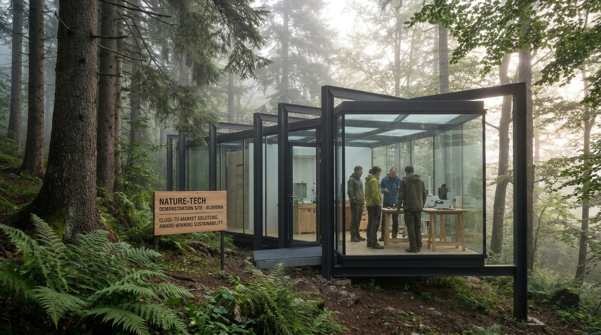

EU·LIFE·2026
SINERGIJSKI INVESTICIJSKI POTENCIAL
Vsebina razpisa
Odpri uradno stran Nacionalne kontaktne točke za program LIFE v Sloveniji. Informacije o razpisih, projektih in trajnostnih pobudah EU.
Program LIFE 2026 — vodilni vir financiranja EU za okolje in podnebje
LIFE je osrednji finančni instrument Evropske unije za okolje in podnebje. Razpisi 2026 odpirajo nov val priložnosti za organizacije, ki uresničujejo Evropski zeleni dogovor — od obnove narave in krožnega gospodarstva do razogljičenja in čistega energetskega prehoda.
Za visokotehnološke okoljske rešitve je LIFE strateško unikaten: ne financira čiste raziskave, temveč demonstracijo in tržno približevanje (close-to-market) dokazanih rešitev z merljivim okoljskim učinkom in jasno evropsko replikabilnostjo. Cilja na rešitve, ki so pripravljene na prehod iz laboratorija na trg.
Upravičeni prijavitelji so pravne osebe — podjetja, MSP, zavodi, javne ustanove, raziskovalne organizacije in mednarodni konzorciji. Prav konzorcijska zasnova z evropsko dodano vrednostjo je za naročnika ključni vzvod konkurenčnega pozicioniranja na evropskem trgu zelenih tehnologij.
Narava in biotska raznovrstnost (PROJEKT_01)
Zaščita in obnova ekosistemov, Natura 2000 ter izvajanje Uredbe o obnovi narave in Strategije EU za biotsko raznovrstnost 2030. Financira ohranitvene in demonstracijske projekte v morskih, sladkovodnih in kopenskih ekosistemih.
Krožno gospodarstvo in kakovost življenja
Krožno gospodarstvo, ravnanje z odpadki, voda, zrak, tla in ničelno onesnaževanje. Prednost imajo projekti predelave odpadkov, trajnostnih materialov in zmanjšanja emisij — neposredno polje delovanja naročnika.
Blažitev podnebnih sprememb in prilagajanje nanje
Zmanjševanje emisij toplogrednih plinov, prilagajanje, odpornost in podnebno upravljanje. Financira demonstracijske projekte razogljičenja in krepitve odpornosti na ekstremne vremenske pojave.
Prehod na čisto energijo
Energetska učinkovitost, obnovljivi viri, krepitev zmogljivosti ter trg in politike. Izvaja se prek usklajevalnih in podpornih ukrepov (CSA) — najdostopnejši steber za nekapitalske projekte.
// VREDNOST_NA_PROJEKT = okvirni razpon zaprošene EU-dotacije na posamezno vlogo (SAP), povzet iz uradnih razpisnih dokumentov CINEA / EU Funding & Tenders (call fiches V1.0, 21.04.2026): NAT €2–13 mio, ENV €2–10 mio. *Za podnebni steber (SAP-CLIMA) enoten razpon na projekt ni javno objavljen — prikazana je tipična SAP ocena; pri čistem energetskem prehodu (CET/CSA) se zneski razlikujejo po temah (npr. do €2 mio). Natančne vrednosti preverite v posameznem razpisu pred oddajo. Vrednosti so okvirne in ne pomenijo zagotovljenih sredstev.
Uvodna analiza & strategije
Inštitut okoljskih tehnologij IOT Ekogen kot neprofitni zavod razvija okoljske, trajnostne in razvojne tehnologije za zmanjševanje emisij CO₂, uvajanje krožnega gospodarstva ter energetsko in okoljsko učinkovite rešitve. Portfelj — od anaerobnih čistilnih naprav brez električne energije, izventermične predelave odpadnega tekstila in plastike v gradbene materiale, recirkulacijskih (RAS) sistemov za sladkovodne ribe in predelave odpadnega rastlinskega olja v biodiesel do LCA analiz in mobilnega laboratorija na terenu — se neposredno prekriva z osrednjimi prioritetami programa LIFE: krožno gospodarstvo, ničelno onesnaževanje in blaženje podnebnih sprememb.
Demonstracijsko-replikacijski značaj teh rešitev (close-to-market) idealno ustreza standardnim akcijskim projektom (SAP) — glavnemu instrumentu LIFE za podjetja in inštitute, ki ne razvijajo le boljših okoljskih rešitev, ampak skrbijo tudi za njihovo širšo tržno uveljavitev. LIFE 2026 razpisi so bili objavljeni 21. aprila 2026; za podsklop krožnega gospodarstva in ničelnega onesnaževanja je na voljo okoli €79 mio, posamezne dotacije pa praviloma znašajo med €2 in €10 mio.
LIFE financira pravne osebe, ne fizičnih oseb. Ker IOT Ekogen deluje kot registriran zavod, je upravičen prijavitelj — to je ključna prednost pred samostojnimi podjetniki (s.p.), ki kot fizične osebe niso upravičeni. Za večjo konkurenčnost in evropsko dodano vrednost se priporoča oblikovanje mednarodnega konzorcija (npr. s partnerji iz vsaj enega dodatnega članstva EU).
Top 10 ocenjenih konceptov
—
—
Finančni razrez & ROI simulator
// Strošek na enoto vpliva se ob večjem obsegu znižuje zaradi ekonomije obsega. Vrednosti osnova za simulacijo.
EU LIFE Compliance RadarOcena skladnosti projekta z merili ocenjevanja EU LIFE na petih oseh (Trajnost, Skalabilnost, Inovacija, Vpliv, Skladnost), vsaka na lestvici 0–10. Večja kot je obarvana površina, bolje projekt ustreza prioritetam razpisa. Vrednosti so strateška ocena za usmerjanje pijave.
Za analizo uporabe strani in izboljšanje uporabniške izkušnje uporabljamo orodje Microsoft Clarity. Ali dovolite uporabo piškotkov za statistiko?